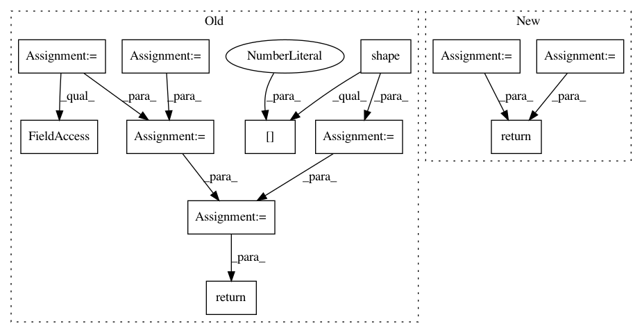

e2cf1e4f51b9e10056fb79bdefd3de769131a8cc,hypergan/configurable_component.py,ConfigurableComponent,layer_avg_pool,#ConfigurableComponent#Any#Any#Any#,424
Before Change
def layer_avg_pool(self, net, args, options):
options = hc.Config(options)
stride=options.stride or self.ops.shape(net)[1]
stride=int(stride)
ksize = [1,stride,stride,1]
if options.slice:
size = [int(x) for x in options.slice.replace("batch_size",str(self.gan.batch_size())).split("*")]
net = tf.slice(net, [0,0,0,0], size)
net = tf.nn.avg_pool(net, ksize=ksize, strides=ksize, padding="SAME")
return net
def layer_combine_features(self, net, args, options):
op = None
After Change
return nn.AvgPool2d(2, 2)
def layer_avg_pool(self, net, args, options):
self.current_height //= 2
self.current_width //= 2
self.current_input_size = self.current_channels * self.current_width * self.current_height
return nn.AdaptiveAvgPool2d([self.current_height, self.current_width])
def layer_combine_features(self, net, args, options):
op = None
if(len(args) > 0):
In pattern: SUPERPATTERN
Frequency: 3
Non-data size: 12
Instances
Project Name: HyperGAN/HyperGAN
Commit Name: e2cf1e4f51b9e10056fb79bdefd3de769131a8cc
Time: 2020-02-09
Author: martyn@255bits.com
File Name: hypergan/configurable_component.py
Class Name: ConfigurableComponent
Method Name: layer_avg_pool
Project Name: jfkirk/tensorrec
Commit Name: db4c8744b0c7fa95502e1172dd4c597e62e55b0e
Time: 2018-02-27
Author: james.f.kirk@gmail.com
File Name: tensorrec/loss_graphs.py
Class Name: WMRBLossGraph
Method Name: loss_graph
Project Name: GPflow/GPflow
Commit Name: bb099e4c5b48329b842dbf9884f086f7b514bc0a
Time: 2020-03-16
Author: dutordoirv@gmail.com
File Name: gpflow/models/model.py
Class Name: GPModel
Method Name: predict_f_samples